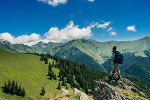

Summer Activities
There are many things to do around Leadville in the summer! From checking out the historic section of town, to enjoying the great outdoors. If you're interesting in Hiking, we suggest the trails surrounding Turquoise Lake and the Hagerman Pass area. Fishing? Check out the legendary Arkansas River for a catch of a lifetime!
Winter Activities
Wintertime in the high rockies is like nothing you've every experienced before. Snowshoe, Ski, Snowmobile, or enjoy the great local food Leadville as to offer. Averaging over 250 inches of snow anually, Leadville is located just 10 minutes from Ski Cooper, 20 minutes from Copper Mountain, and 45 minutes from Vail. Looking for somewhere to snowmobile? Check out nearby Nova Guides! (And ask for Jackson). Just remember to tip your guide!